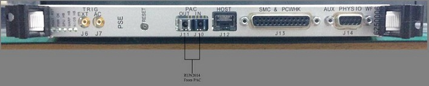
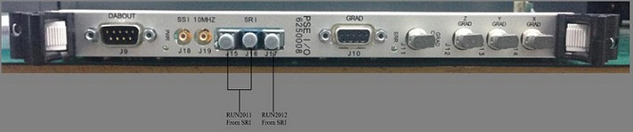
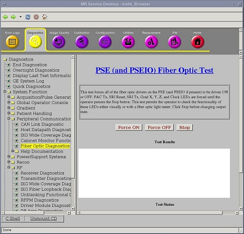
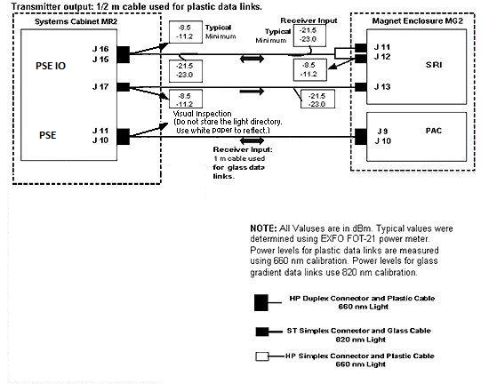
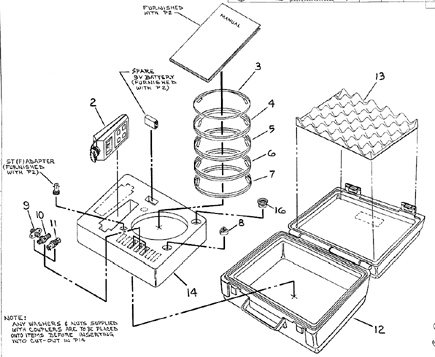

PSE/PSE IO Boards SRI PAC Fiber Optic Checks
Prerequisites
Overview
This procedure describes how to turn on the fiber optic drivers in a Signa system. Software output control is provided for the HFBR-1522 drivers (plastic cable) and the HFBR-1414 drivers (glass cable) on the PSE and PSE IO Boards in the CAM-Lite Chassis, the HFBR-1522s (plastic cable) on the PAC and the SRI.
1 PSE and PSE IO BOARDS, SRI, PAC FIBER OPTIC CHECKS
Procedure
- Access to the PSE and PSE IO Boards and disconnect the 5 fiber optic cables from J10, J11 of PSE Board and J15, J16, J17 of PSE IO Board according to the Figure 1 .
- The Fiber Optic Test can be selected from the Diagnostics menu.
The drivers on the PSE and PSE IO cards (See Figure 1)
remain on until the Fiber Optic Test is canceled. The drivers on the
link remain on until the test is canceled, or a break occurs in the
link upstream from the device being tested.
Figure 1. PSE and PSE IO Boards LOCATION


2 Fiber Optic Power Level Measurement
Procedure
- To turn on the HFBR-1522 drivers on the PSE/PSE IO Boards and
the HFBR-1522 drivers on the FRI fiber optics and PSE IO-SRI fiber
optics, go to the Service Desktop on the host computer and start the
Service Browser if it’s not already running by clicking the Service Browser button on the diagnostics menu on the
left side of the screen. See Figure 2.
Figure 2. STARTING FIBER OPTIC TESTS

- This test illuminates the fiber optic transmitters on the PSE/PSE IO boards to allow testing their intensity. The LEDs illuminated are SRI Reset, SRI Tx, Grad X,Y,Z Clock, and PAC Tx. They will continue to be illuminated until the Stop button is pressed.
- Remove protective cover and install the appropriate adapter
(46-320033G1 for plastic cables;
FOA-32 for glass cables) onto the fiber optic meter. Plug test cable
(1/2 m for plastic (46-307564P4),
1 m for glass (46-307584P3)) onto
the adapter. See Figure 3.
Figure 3. FIBER OPTIC MEASUREMENT CONFIGURATION

- Use the on/off button to turn on the EXFO fiber optic meter. Make sure the meter is on 660 calibration for plastic links and 820 calibration for glass links. Use the λ Select button to alternate between wavelength values displayed on the meter LCD display. Use the dBm/W button to select dBm unit scale on the meter LCD display.
- Disconnect system cable from transmitter (gray fiber optic connector)
under test. Connect the test cable into the transmitter under test.note:
Cable damage possibility. Disconnecting the fiber optic cables by pulling on the cable can damage the cable/connector. Use the connector to disconnect cables.
note:The fiber optic connectors are a latching type connector. For the plastic cable connectors, press on the latch to release. For the glass cable connectors, press in on outer connector shell and rotate a quarter turn.
- Measure transmitter output through test cable with EXFO fiber
optic meter. Compare this value with specification. See Figure 4 .
If value is out of spec, there is a problem. It could be a power supply
problem, transmitter problem, or functional problem with board. Do
not proceed until this value is within spec.
Figure 4. 1.5T FIBER OPTIC POWER LEVELS

note:The fiber optic connectors are a latching type connector. For the plastic cable connectors, press on the latch to release. For the glass cable connectors, press on the outer connector shell and rotate a quarter turn.
- Disconnect test cable from the transmitter under test and reconnect system cable to transmitter.
- Disconnect test cable from EXFO fiber optic meter.
- Disconnect far end of system cable from receiver (blue fiber optic connector; gray for some) and connect system cable to meter adapter.
- Measure optical output from system cable. Compare this value with specification. If this value is out of spec and the transmitter output was within spec, there is a cable routing issue or a damaged cable. Check cable for kinks, tight radius bends, damaged or poorly polished connectors, etc.
- Repeat this procedure for each link that requires testing.
For the optical cable form PAC (the cable connected to J10/J11 at PSE), just inspect that the signal light can be seen from the cable end.
3 TEST SPECIFICATIONS
The following data characterize fiber optic power levels in a Signa system. Typical data were obtained from a limited sample of systems. Typical values may cover a wide range due to the effects of cable routing, connecting, and cable length which may vary from system to system. Minimum values, however, are absolute, and will be the same for fixed sites, mobiles, and T/R(s).
Procedure
- Plastic Data Links (AMP fiber 501232-5 or 501336-1 with HP versatile
link connectors and 660 nm HFBR-1522/ HFBR-2522 transmitter/receiver
pair):
PSE IO J16 to SRI J11; PSE IO J17 to SRI J13; SRI J12 to PSE IO J15;
-
Nonmodulated HFBR-1522 transmitter output through 1/2 m test cable:
Typical: -8.5 dBm
Minimum: -11.2 dBm
-
Nonmodulated HFBR-1522 transmitter output through 147 ft cable:
Typical: -21.5 dBm
Minimum: -23.0 dBm
Gradient (glass) Data Links: (AMP fiber 502083-1 with ST type connectors and 820 nm HFBR-1414/HFBR-2416 transmitter/receiver pair)
note:Do not observe the light directory. Use white paper and reflect the beam to observe.
PSE J10 to PAC J9; PSE IO J11 to PAC J10;
-
4 Finalization
Procedure
- Turn off the fiber optic meter. Disconnect all kit components
used in measurement scheme and return to kit. See Figure 5.
Figure 5. Fiber Fiber Optic Light Meter Kit

- Restore all system fiber optic cables and components to original configuration.